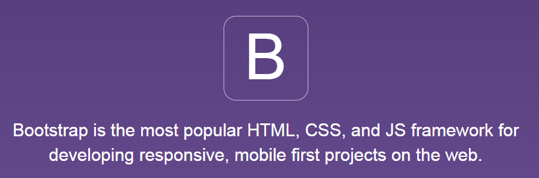
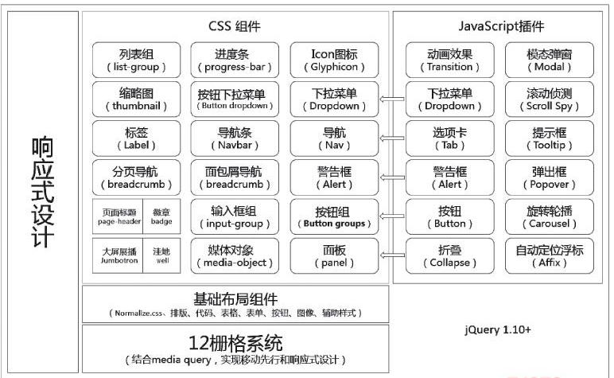
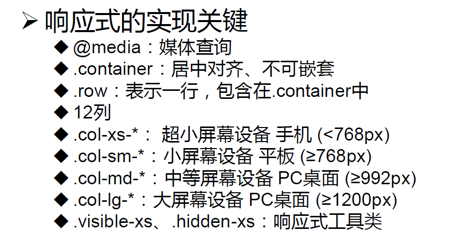
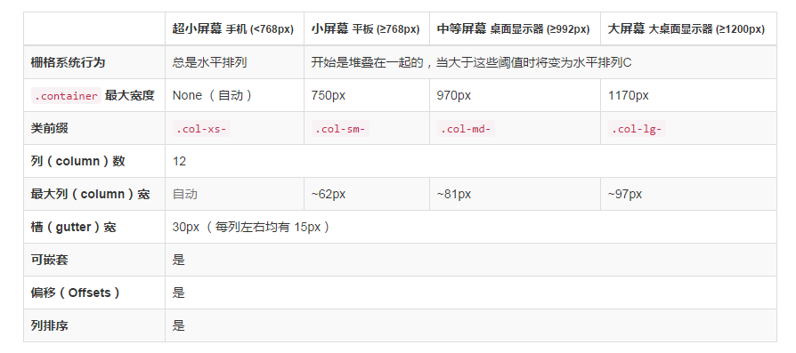
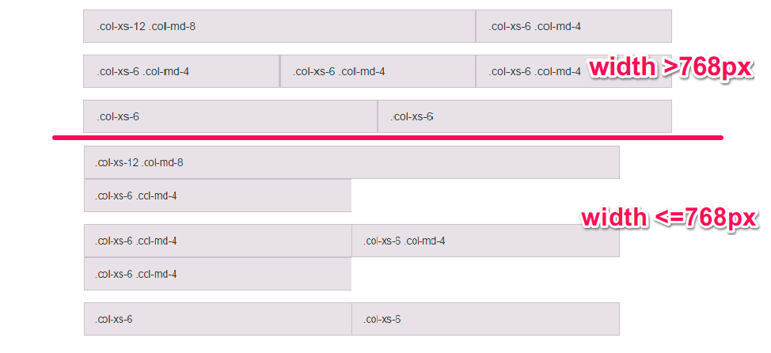

前端技术介绍
BY Hao Ju Zheng
github: https://github.com/hjzheng
- Bootstrap
- AngularJS
- JQuery
Bootstrap
Bootstrap到底有多流行?
迄今为止Bootstrap项目在github上已经收获4156个 Watch,72185个Star,27020个Fork,可见其有多流行。
Bootstrap特点
- 一套完整的基础CSS插件
- 丰富的预定义样式表
- 一组基于JQuery的JS插件集
- 一个灵活的响应式栅格系统
- 基于MIT License
Bootstrap发展史

Bootstrap架构
12栅格系统
12栅格系统(1)
12栅格系统(2)
<div class="row">
<div class="col-xs-12 col-md-8">.col-xs-12 .col-md-8</div>
<div class="col-xs-6 col-md-4">.col-xs-6 .col-md-4</div>
</div>
<div class="row">
<div class="col-xs-6 col-md-4">.col-xs-6 .col-md-4</div>
<div class="col-xs-6 col-md-4">.col-xs-6 .col-md-4</div>
<div class="col-xs-6 col-md-4">.col-xs-6 .col-md-4</div>
</div>
<div class="row">
<div class="col-xs-6">.col-xs-6</div>
<div class="col-xs-6">.col-xs-6</div>
</div>
12栅格系统(3)
CSS基础样式
Bootstrap提供了一些常见样式,例如排版, 代码, 表格, 表单, 按钮等
CSS基础样式(1)
这里以Button为例
CSS组件
无数可复用的组件，包括字体图标、下拉菜单、导航、警告框、弹出框等更多功能。
CSS组件(1)
这里以警告框为例
JavaScript组件
jQuery 插件为 Bootstrap 的组件赋予了“生命”。可以简单地一次性引入所有插件，或者逐个引入到你的页面中。
JavaScript组件(1)
这里以dialog为例
通过Less或sass文件自定义主题
customize theme一个基于bootstrap的小应用markdown-reader
Bootstrap相关资料
AngularJS

- MVC framework
- Ideal for single page applications
- "HTML Enhanced"
AngularJS特点
- Templating
- Data binding
- Directives
- Services
- Dependency injection
- Filters
- Routing
- Testability
AngularJS相关资料
JQuery
JQuery特点
- 轻量级
- 链式调用
- 强大选择器
- 通过插件来扩展
JQuery相关资料
谢谢观赏
2014-09-07
如果你喜欢,请star我